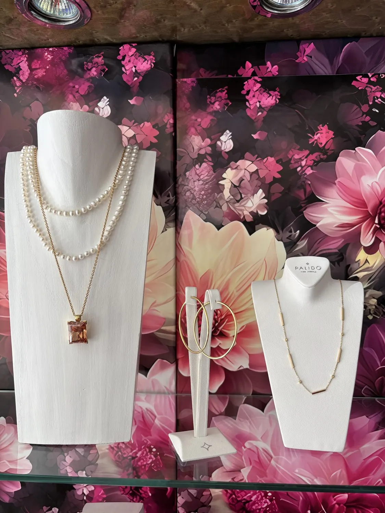
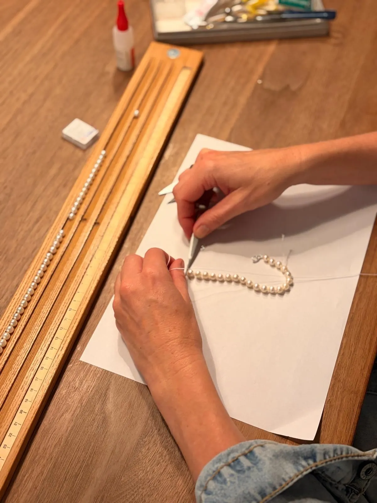
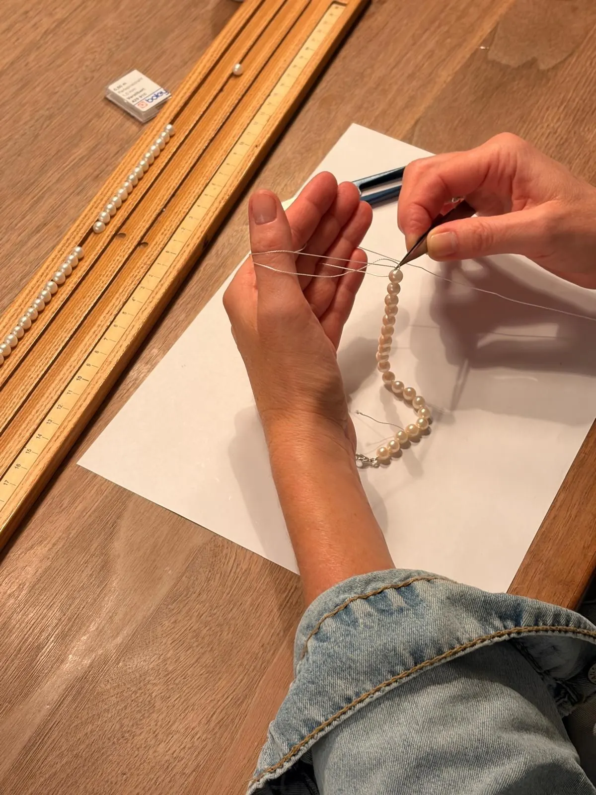

Uhren Schmuck
Perlenketten knüpfenin Donauwörth
Die Kette ist gerissen oder sitzt nicht mehr richtig.

Darum geht es
Wir bringen Ihren Perlenschmuck wieder zum Strahlen.
Ob Perlenketten neu knüpfen, Ketten neu auffassen oder Verschlüsse erneuern: Wir kümmern uns mit viel Liebe zum Detail um Ihre Schmuckstücke. Alles aus einer Hand.
Perlen werden nicht auf einen Faden gezogen und gut ist. Zwischen jede Perle gehört ein Knoten — damit sie sich nicht aneinander reiben und damit bei einem Riss nicht die ganze Kette auf dem Boden liegt. Das ist Handarbeit und dauert. Es war über Jahrzehnte fester Bestandteil dieses Hauses, und wir nehmen es wieder auf.
Im Einzelnen
Was dazugehört.
Neu geknüpft
Perle für Perle auf neue Seide, mit Knoten dazwischen. So, wie eine Perlenkette gebaut gehört.
Gerissene Kette
Bringen Sie alles mit, was Sie gefunden haben — auch lose Perlen in der Tüte.
Verschluss erneuern
Ausgeleierte Karabiner und Schnäpper werden ersetzt, in Gold, Silber oder Weißgold.
Länge ändern
Zu kurz, zu lang, oder aus einer langen Kette zwei kürzere — geht beides.
Perlen reinigen
Perlen vertragen keine Ultraschallreinigung. Wir machen es so, wie sie es vertragen.
Fehlende Perlen
Wenn welche fehlen, suchen wir passende in Größe, Form und Farbe dazu.
Aus der Werkstatt
So sieht das Knüpfen aus.
Zwei Fotos aus der eigenen Werkstatt in Donauwörth.


Immer gleich
Erst ansehen, dann Preis, dann machen.
Sie bringen das Stück vorbei, wir sehen es uns an und sagen Ihnen, was es kostet — bevor wir anfangen. Gearbeitet wird hier im Haus, an der Werkbank hinter dem Laden. Nichts wird eingeschickt.
Nachgefragt
Häufige Fragen
Das Gleiche werden wir hier oft gefragt. Steht Ihre Frage nicht dabei, greifen Sie zum Telefon — es geht keine Warteschleife ran.
Ihre Frage steht nicht dabei?
Wie lange dauert das?
Das hängt an der Länge der Kette. Wir sagen Ihnen beim Abgeben, wann Sie sie wieder abholen können.
Muss zwischen jeder Perle ein Knoten sein?
Bei echten Perlen ja. Die Knoten verhindern, dass sich die Perlen gegenseitig abschleifen — und halten die Kette zusammen, wenn der Faden einmal reißt.
Ich habe nur noch einen Teil der Perlen.
Kommen Sie trotzdem vorbei. Wir sehen uns an, was da ist, und sagen Ihnen ehrlich, was daraus noch werden kann.
Außerdem
Was wir sonst noch machen.
Bringen Sie es einfach vorbei.
Wir sehen es uns an, sagen Ihnen, was los ist und was es kostet — bevor gearbeitet wird.